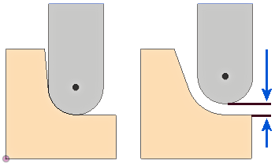

<div id="overthickness"><p>パスを検出するために、工具に適用される追加の厚さです。</p>
<table class="tipTable" cellspacing="10">
<tr>
<td><center></center></td>
</tr><tr>
<td><center><p><b>実際のパーツの半径と実際のツールの半径の間の値です。</b></p></center></td>
</tr></table>
</div>